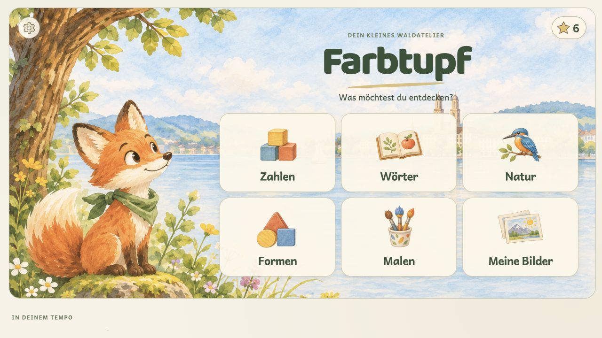
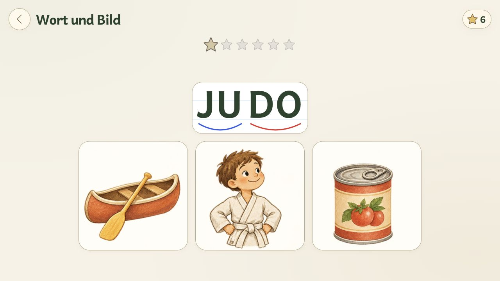
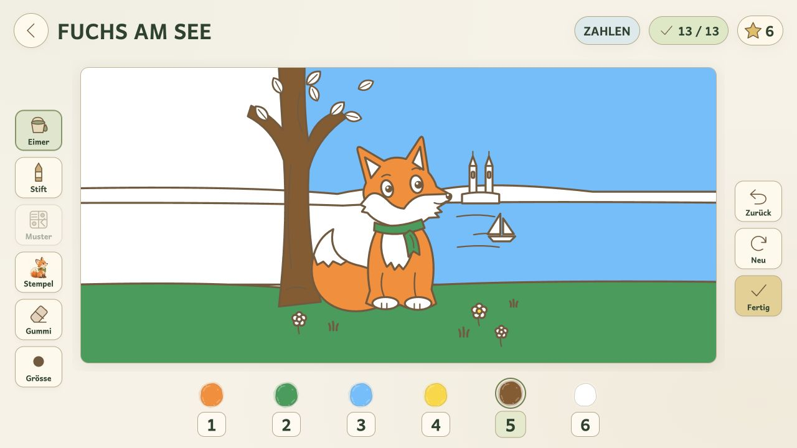
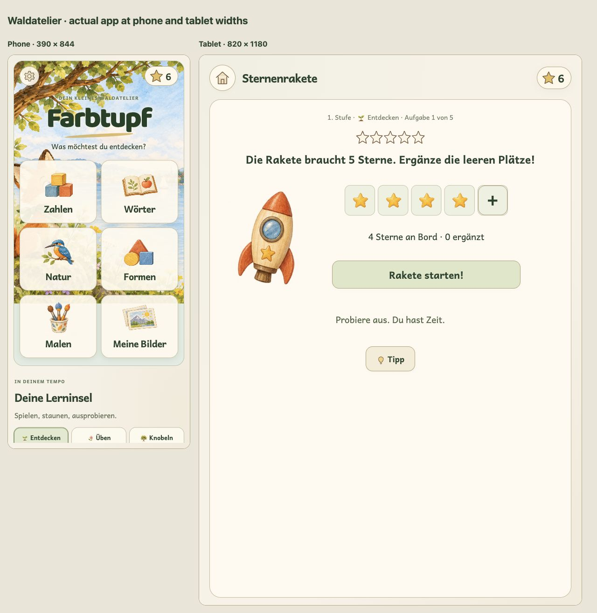

Farbtupf · Waldatelier im Einsatz

Start · entdecken, lernen und malen

Lesen · dieselbe Bildwelt für alle Wörter

Malatelier · eigene Bilder und klare Werkzeuge

Telefon und Tablet · echte App bei 390 und 820 Pixeln Breite